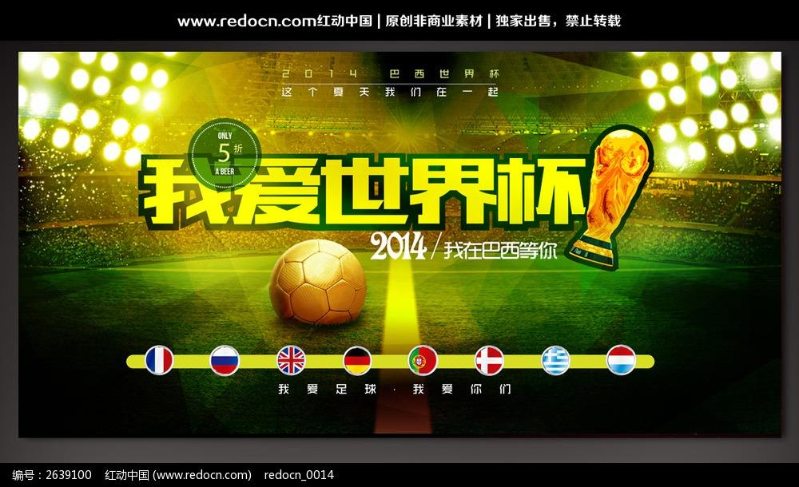
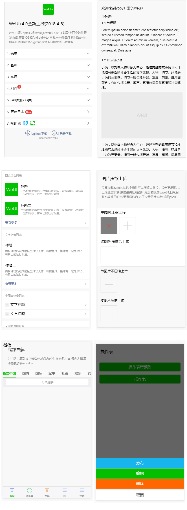
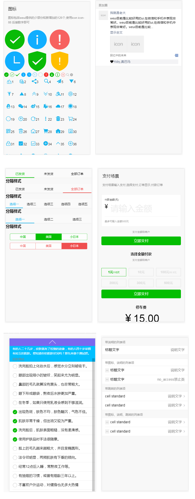
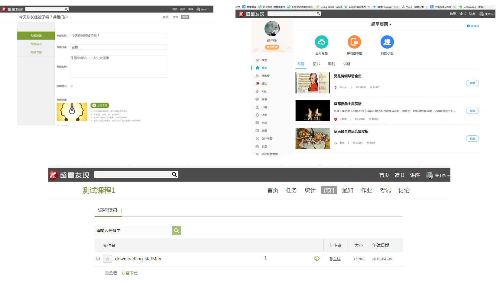

最近大家都很忙，聚在一起很不容易，咱们今天抽个空，来共同讨论一下制定公共UI的方案和设计与前端协作中经常遇到的小问题。目的就是，提高工作效率，减轻工作压力。即能减轻咱们的工作压力，还能提升工作效率，是不是真的，我们不防来试一试。
如何减轻工作压力：
先从UI设计师分析，比如现在是超星集团30周年纪念日，超星将举办一场隆重的庆典，史总要求做一张具有标志性和象征意义的宣传封面或者海报，要求既能体现超星的实力和规模之大，又能体现超星集团对教育事业做出卓越的贡献。从视觉上，一定要有超强的视觉冲击力并能体现之隆重。应用范围是，适合多种宣传方式。
如果你最初，就没打算在网上找灵感，不借助外力的除外。

一般情况下，你首先按照主题从网上搜素材找灵感，不断的构思和构图，再找素材，再修图，最后修饰细节。构图最大的困惑是不是，没有灵感，找到灵感的速度，除了最初的直觉灵感，再就是找到的素材，与直觉灵感的匹配程度，而对于大多数人来说，能定位到准灵感的速度，受影响最大的是找素材，因为找素材的过程，有可能会使你的最初直觉灵感有所改变。如果你找到一个非常接近你的最初灵感，或者即使改变最初灵感，也不用过多的修改和拼合，是不是更有助于你找到最终的准灵感呢。
所以，找素材，很耗时，而且还有不确定性，是最影响你构图周期长短的。
这是在不受外界干扰的情况下，如果不断的因为一些小事情，你在构图的过程中，不断的有人在打断你，你的构图速度，是不是还会受到阻碍呢。
具体是哪些小事情。比如，某一项目中，少一弹层，需要出图，某一下拉菜单需要出图，添加一登录后状态需要出图，优化某一页面的尺寸和配色等等。
其次从web前端工程师分析，同理，前端也是一样，如果某个项目，前端之前做过类似的，再次做时，速度会比上一次快很多。原因是，代码有时可复用，再有，项目中的某效果和功能是需要借助插件来完成的，如果不借助插件，每行代码都是自己敲，那将会使开发周期延长很长很长时间，甚至，本来使用插件，一小时或者10分钟能搞定的事，如果自己手写，可能要延长两三天，或者1周时间，有些功能有时，还完成不了。现成的插件和可复用的代码就相当于设计师找的素材。
所以对部分项目，制定一些公共UI方案，可避免开发不必要的重复性工作，从而，减轻工作压力，还能提升开发效率。
关于定制公共UI，或者叫默认样式，一旦制定完成，除了细微的调整外，一般不会有大的改动，因为它已经成为一种标准。就如手机版腾讯QQ，微信，支付宝，京东，淘宝，唯品会，新浪微博等，他们的用户对这些客户端的UI已经习惯，到了某个客户端中，每个界面对应的图标和各种交互的反应已经非常熟习，可以说对某种操作，都已经成了某个客户端的标志。
很典型的一个例子，一些老老师不擅长使用电脑，一开始接触的xp系统，你给他一个win7系统，他使用不了，不习惯，找东西不方便。
再比如，一个app版本更新频繁，而且版本差距之大，对于不擅长手机操作的用户，肯定会造成一定的困扰。


所以，微信这点做的很好，如微信的WeUI，无论是配色上，还是交互上，都有自己的一套公共处理方式。还有多种用途的图标尺寸，都是通用的，非常实用，让用户操作和识别上都感到很有权威性，体验上和视觉上很舒服。如果某一天你在微信上支付时，突然弹出一个另类的支付界面，以前从来都没见过，刚开始，是不是给你一种陌生的感觉，或者立马有了怀疑的态度。
有的人说，不是的啊，在过春节、元旦、中秋、国庆，端午时经常看到他们在变化啊。是这样的，这也正是因为使用了统一的公共UI才能达到的效果，他可以全局性的设定主题，来迎合某个节日。不像咱们学习通，除了底部的导航和欢迎界面变一变外，内部没办法实现统一改变主题，你别看有很多相同的页面，其实是很多个相互独立的页面，要想实现改某一个主题，你都不知道要改几个页面，不知道要找几个研发去改。甚至研发自己都不清楚要改几个。
拿咱们超星空间改版举例，之前是绿色，现在想改为蓝色，只是改了一个表面，里面还有大量的页面还是绿色，而且还是不统一的绿，这个工作量不是一朝一夕能改掉的，因为独立样式太分散，没有定制公共UI，导致很难彻底改版。
所以公共UI不仅仅可以改变主题，提高用户的体验度，最重要的是，它能减少不必要的重复开发，提高工作效率，提升项目质量，另外还能体现一个企业的威权性，很有可能在特定的一个领域成为企业的一种标志。

超星也算是一个有一定规模的企业，学习通的使用量几千万，也不小；公司大部分移动项目，都是围绕学习通来开发，或者都是依赖于学习通客户端的，即便不是在学习通上使用，也都或多或少以学习通为参照开发，证明学习通UI风格基本已定，不会有太大的改变，而且大多移动项目都大同小异。现在超星所有移动项目只是视觉上基本都是统一风格，但是代码上和UI图可能是多套图，多套代码，等于重复开发，也不利于统一维护。
在项目开发中，我经常遇到产品提这样的需求，说相同功能某一个页面和另一个页面不统一，间距不一致，高度不一致，线条粗细不一致，颜色不一致，字号不一致，某个状态图标不一致等，现在需要改为一致。然后前端在各个研发处，就好像是蜂蜜给每朵花授粉似的，一一去改。发生这种情况，通常是多个UI设计师做的效果图，可能会有微差；也有可能是同一个UI设计师也会发生，因为同一功能并不是同一天开发的，不知道哪一天又出一类似的功能，时间久了，因为没有参考标准，可能忽略了统一性，凭感觉又定制了一个标准。
为了不必要的开发和减轻工作负担，我觉得有必要，而且亟待需要制定一套超星公共UI。
既然咱们公司满足制定公共UI的条件，而且还有那么多优点，那为什么不制定呢？那制定公共UI后，对今后工作和项目有哪些改变呢
过一段时间后，觉得这个公共UI不好看了，过时了，完全可以再定制一份新的，将来会以版本来控制。以前的版本还保留。
等学习通页面版本的迭代更新都使用公共UI后，应用范围达到一定程度，得到大家的认可后，我们就可以实现统一主题设置了。
以下，是我建议制定成公共UI的范围。我一一向大家展示要制定公共UI的细节图，展示过后，大家发表一下意见，共同讨论一下。
设计与前端协作中经常遇到的一些小问题：
前期多注意一些细节，可以减少不必要的外界干扰，从而更专注于开发，也能达到减轻工作压力的效果和提升工作效率。
如果有些人不这么认为，我就是想让更多的人打扰我，正好刷一把存在感，那我只能呵呵。
以下内容逻辑性不强，跳跃性很大，请大家注意区分。
1.需求很急时，遇到问题，前端需要和UI设计师、产品经理三人沟通，但一时找不到出图的UI作者，经常需要东问西问，才能找到，经常为此抓狂。
有些新来的产品经理大多都是刚毕业不久，经验不足，刚来对公司研发团队工作流程不够了解，更重要的是，不懂技术。另外，他提的需求往往都很急，我在今天必须要这个，需求描述不完整，很多咱们想要的内容，他们一次性很难提完，都是在咱们看到需求时，或者做的过程中发现问题，特别让人抓狂的是你找他人，关键，部分产品经理经常出差，RTX经常不在线，有些时候打电话沟通起来还很麻烦，或者他在开会，你要等他。或者经常联系不到人，更甚至是联系不上。你没办法，只能等，可你排了很多需求，你不能干等啊，你可能会先去做别的项目，可等你刚把思路切到其他项目时，他给你回电话或者回信了，你还得把思路再切到他的项目中来。有些人可能就说了，你可以先做清楚的，不清楚的，等他回信确认后再做。是，大多也是这么做的，可也有一部分情况是这样的，他在交待需求时说很急，你怕耽搁到工作，你是放下手进而正在做的其他项目，加班加点做他的项目，已经快做完了，就差沟通这一点了，等你和他沟通后发现，你做的大部分工作，其实之前有人做过，或者有80%是现成的，你只需要小改一下就完成。唉。。。我只能安慰自己，怪自己没问清楚，做都做了，也无所谓，可更可气的是，把页面给了后端，后端居然不用，说只需要在原来的基础上按效果图改改就好。当时，别说有想打人的冲动，想杀人的冲动都有。别的项目还在排着，你也没太多时间和产品经理理论这些，今天你和这个产品经理说了，明天他走了，又来一新的，你还得再重复一扁，想到这，还是安慰自己，怪自己没问清楚，你只能乖乖回去赶紧做其他项目。这样的问题遇到不少，就算产品经理在公司，也经常发生。后来预防这种情况，再做项目时，也是给产品经理多次确认后，可还发生了一次。导致发生这样的原因是，与后端联系不够紧密，沟通不够。所以这也是为什么每次，在产品经理提需求时，都让他们把后端研发的名字或者具体负责人写到描述中，每次做这样的项目时，先和后端再三确认和沟通，才开始做。
以上是与后端联系不够紧密经常发生的事，与UI设计师也经常发生这样的事，而且这几率更大。为什么更大呢，因为很多产品经理给UI设计时提需求时，有时候为了更准确表达他的意思，会给一些参考网站，设计师很有可能会截图，或者参照重绘；也有些时候，UI设计师可能是找灵感时，自己从网上搜索到某个网站的网址，发现某一模块可用，就截图，或者参照重绘。简单的小模块，可以忽略不计，或者其实重做也没啥，但是80%是截图呢，不懂技术的产品经理和没有做过前端的UI设计师可能就忽略了这一点。如果产品经理，或者UI设计师把参考的网址给了前端，前端可能非常有用，因为有些样式，可以从中去复制，不用自己一行一行敲代码写脚本了，省出来了很大一部分时间。这是我为什么让产品经理把UI设计师的名字写到项目需求中原因之一。但是产品经理更换太频繁，新产品经理对每个人的名字记不住。有可能会不写UI设计师是谁，就算我每次都交待让他们看学习通小组提需求须知，也还是会忽略不按流程办事，也有些老产品经理，觉得大家都熟了，没有必要写，可他的这一举动，会影响新产品经理的办事，也有可能有不写的情况。所以我提议，为了避免发生以上情况，为了方便前端与设计师之间的及时沟通，咱们UI设计师把文件给产品经理时，带上自己的名字和时间，格式为：项目名称 + 自己姓名 + 时间。